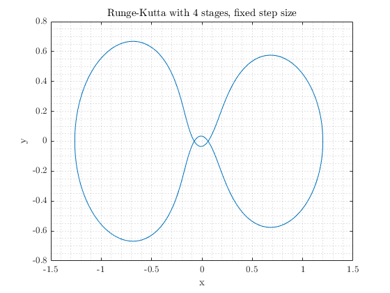
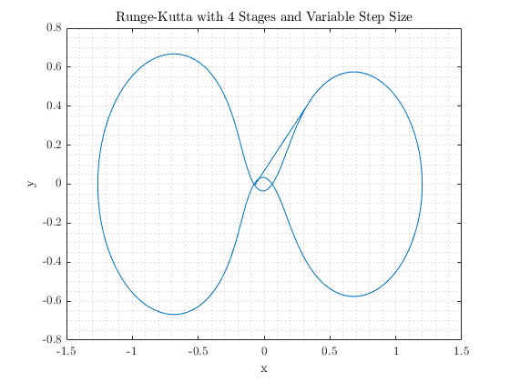
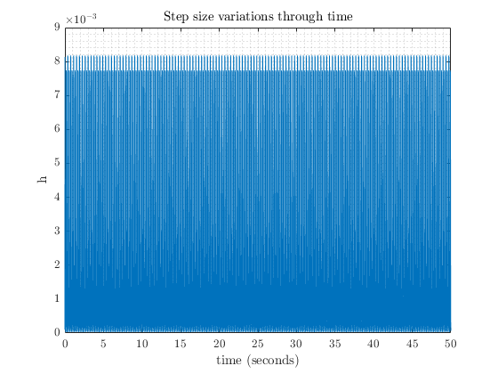

Mehmet KILIÇ - 2232262 - Part 2
Contents
Runge-Kutta 4 stages - Fixed Step Size
nu=1/82.45;
nustar=1-nu;
x1dot = @(x2) (x2);
x2dot = @(x1,x3,x4) (2*x4+x1-nustar*(x1+nu)/((sqrt((x1+nu)^2+x3^2))^3)-nu*(x1-nustar)/((sqrt((x1-nustar)^2+x3^2))^3));
x3dot = @(x4) x4;
x4dot = @(x1,x2,x3) (-2*x2+x3-nustar*(x3)/((sqrt((x1+nu)^2+x3^2))^3)-nu*(x3)/((sqrt((x1-nustar)^2+x3^2))^3));
x1(1)=1.2;
x2(1)=0;
x3(1)=0;
x4(1)=-1.0494;
N=50;
h=0.00001;
start1=tic;
for i=1:N/h
[x1(i+1),x2(i+1),x3(i+1),x4(i+1)]=RungeKutta4Stages_fixed(x1(i),x2(i),x3(i),x4(i),h,x1dot,x2dot,x3dot,x4dot);
end
time_fixed=toc(start1);
figure
plot(x1,x3);
title("Runge-Kutta with 4 stages, fixed step size");
grid minor
xlabel("x");
ylabel("y");

Runge-Kutta 4 Stages - Variable Step Size
nu=1/82.45;
nustar=1-nu;
x1dot = @(x2) (x2);
x2dot = @(x1,x3,x4) (2*x4+x1-nustar*(x1+nu)/((sqrt((x1+nu)^2+x3^2))^3)-nu*(x1-nustar)/((sqrt((x1-nustar)^2+x3^2))^3));
x3dot = @(x4) x4;
x4dot = @(x1,x2,x3) (-2*x2+x3-nustar*(x3)/((sqrt((x1+nu)^2+x3^2))^3)-nu*(x3)/((sqrt((x1-nustar)^2+x3^2))^3));
x1(1)=1.2;
x2(1)=0;
x3(1)=0;
x4(1)=-1.0494;
N=50;
h=0.0001;
beta=0.9;
fac0=0.2;
fac1=5;
p=4;
x1h=0;
x2h=0;
x3h=0;
x4h=0;
hvar(1)=0.0001;
N=50;
start2=tic;
duration=0;
for i=1:(N/hvar(1))
[x1h,x2h,x3h,x4h]=HeunsThirdOrder(x1(i),x2(i),x3(i),x4(i),hvar(i),x1dot,x2dot,x3dot,x4dot);
[x1(i+1),x2(i+1),x3(i+1),x4(i+1)]=RungeKutta4Stages_fixed(x1(i),x2(i),x3(i),x4(i),hvar(i),x1dot,x2dot,x3dot,x4dot);
e=ones(4,1);
e(1,1)=abs(x1(i+1)-x1h);
e(1,2)=abs(x2(i+1)-x2h);
e(1,3)=abs(x3(i+1)-x3h);
e(1,4)=abs(x4(i+1)-x4h);
atol = 1e-10;
rtol=0;
r=(0.25*sqrt((e(1,1)/atol)^2+(e(1,2)/atol)^2+(e(1,3)/atol)^2+(e(1,4)/atol)^2))^(-1/p);
hvar(i+1)=hvar(i)*min(fac1,max(fac0,r*beta));
duration=duration+h;
if duration>N
break
end
end
time=linspace(0,N,length(hvar));
time_variable=toc(start2);
figure;
plot(x1,x3);
title("Runge-Kutta with 4 Stages and Variable Step Size");
xlabel("x");
ylabel("y");
grid minor
figure;
plot(time,hvar);
grid minor
title("Step size variations through time");
xlabel("time (seconds)");
ylabel("h");
 